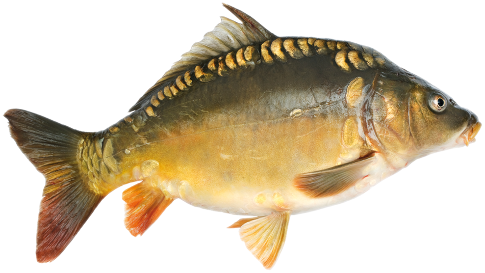

Színezetéről általánosan elmondható, hogy háta zöldes vagy barna, a has irányában világosodó, oldalt sárga, hasa fehér. Szája körül 2 pár bajuszszálat visel, az egyiket a felső ajakon, a másikat a szájszegletben. Szájának bőrredői teleszkópszerűen kinyújthatóak, ami az állat táplálkozását segíti a fenéken lévő táplálék felszedegetésekor. Uszonyaik közül a háti-, mell- és a farokalatti úszók első sugarai megvastagodtak, kemények, hátsó felületük fogazott
A ponty életmódjára (és rendszerint a többi pontyfélére is) az állandóan vándorló, folyamatos táplálékkereső életmód a legjellemzőbb. Jelenlétére nádasoknál a nádszálak lökésszerű mozgásaiból, nyílt vizeken a vízfelszínen megjelenő buboréksorból (túrás) következtethetünk. Kedveli a vízinövények fiatal hajtásait, az árvaszúnyog-lárvákat, ászkarákokat, evezőlábú rákokat, de gazdaságokban a legkülönbözőbb növényi táplálékokra is rászoktatható. Elsősorban a jól felmelegedő, iszapos aljzatú, álló és lassan folyó vizeket kedveli.
Európában a közönséges tőponty, Ázsiában a közép-ázsiai, kínai és délkelet-ázsiai vadponty a legészakibb területek kivételével mindenfelé általánosan elterjedt. Európa nyugati és északi országaiba a tőpontyot az eredeti dunai élőhelyéről telepítették be az elmúlt évszázadokban. A nemes pontyot mára azokra a földrészekre is betelepítették, ahol a ponty nem volt őshonos, így az amerikai földrészre, Afrikába és Ausztráliába.